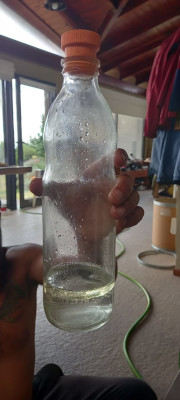
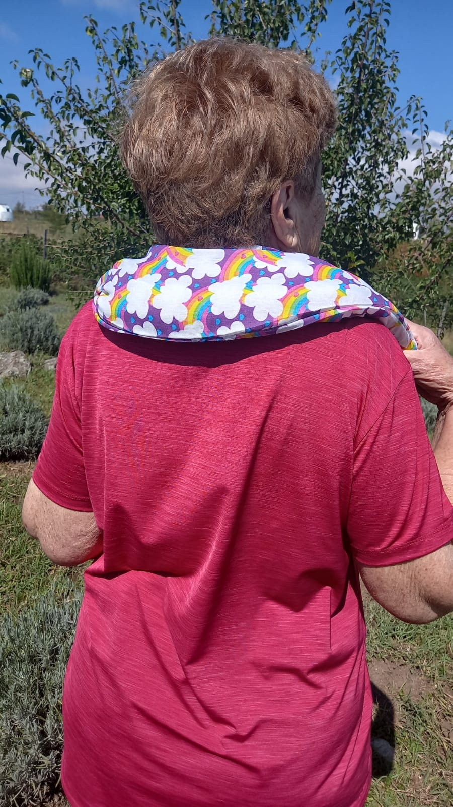
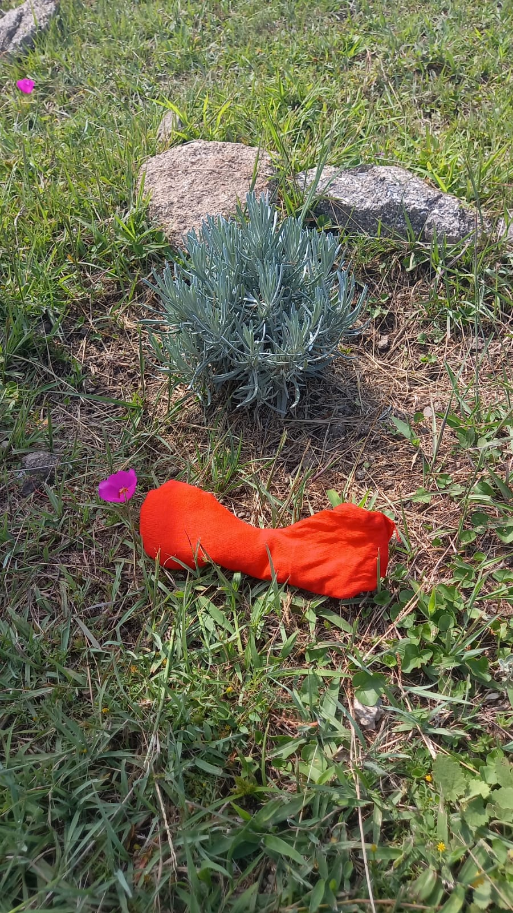
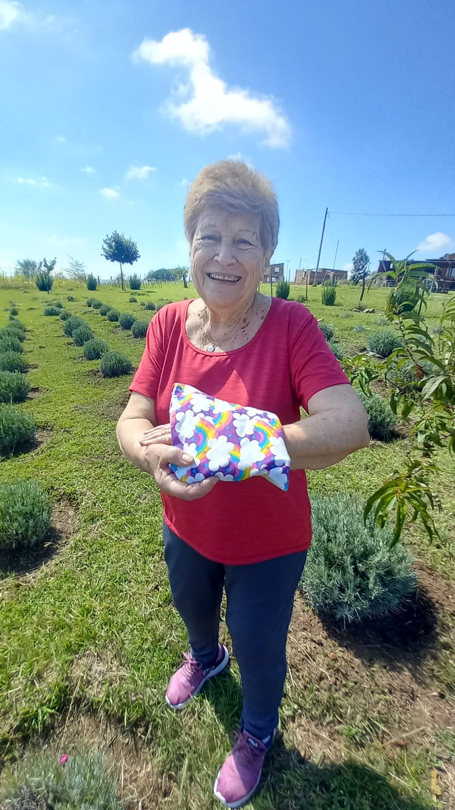
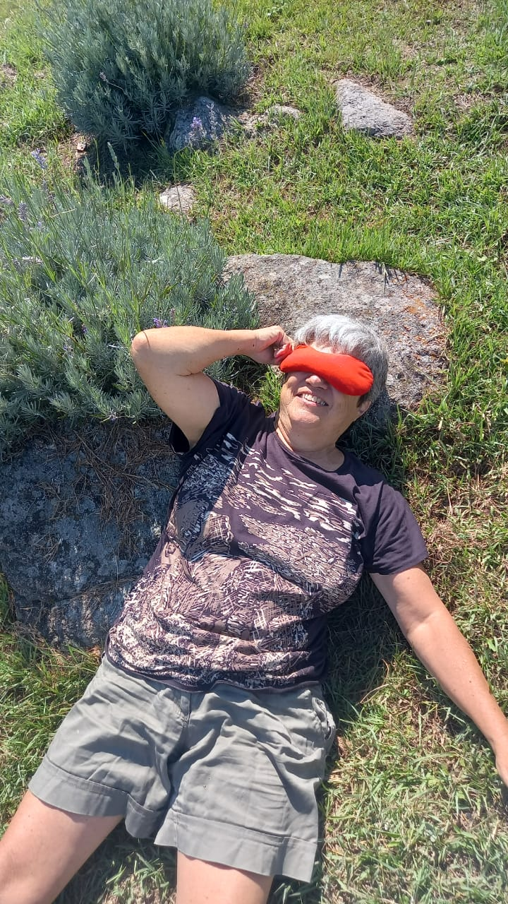

Hijos del Viento es un emprendimiento familiar al pie del Cerro Champaquí que nace en el año 2019, y esta orientado a mejorar la calidad de vida y el bienestar físico, psicológico, energético y mental de la comunidad con productos y servicios orgánicos y conscientes que contribuyan en:
- Salud y bienestar ( mejora el cuerpo psicofísico emocional, mejoras en la piel, disminución de estrés, dormir mejor),
- Medio ambiente ( cadena biodinámica),
- Sociocultural ( dejar de comprar lo comercial, generando empleo)
- Económico ( sustentable a largo plazo).
¿Qué ofrecemos?
Elaboración de productos y servicios a base de las plantas aromáticas. Son artesanales, agroecológicos, conscientes, manufacturados desde el sentir, al pie del Cerro Champaqui; orientados a promover el equilibrio y mejorar la calidad de vida.
Objetivos Sostenibles
- Salud y bienestar
- Educación de calidad
- Ecosistemas terrestre





